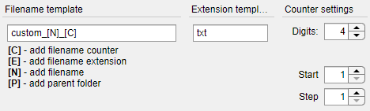
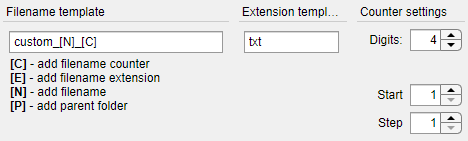
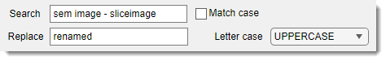
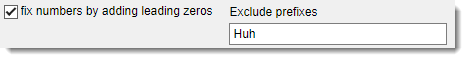

Click the Select files… button to choose the files you want to rename. The selected filenames will appear in the main table of the tool, giving you a clear overview of the files to be processed and the possible outcomes.

The right mouse click over the file list table opens a context menu with additional operations:
- Remove from the list: use this operation to remove selected files from the list
Use the Filename template edit box to create a pattern for the new filenames. Incorporate these placeholders:
- [C]: Adds a counter to the filename. Customize its behavior (digits, start value, step) in the Counter Settings panel.
- [E]: Inserts the original file extension (e.g., tif, jpg).
- [N]: Includes the original filename (without extension).
- [P]: Adds the parent folder name to the new filename.
Example:
A filename template like custom_[N]_[C] and extension template txt might produce from custom_image_001.txt from an original file named image.doc.

A filename template like custom_[N]_[C] and extension template txt might produce from custom_image_001.txt from an original file named image.doc.

Use the Extension template field to modify the file extension if needed. For example, change all extensions to jpg or use the default value [E] to keep the existing filename extension.
Adjust the counter parameters in the Counter Settings panel:
- Digits: Number of digits in the counter (e.g., 3 for 001).
- Start: Starting value of the counter (e.g., 1).
- Step: Increment between counters (e.g., 1 for 001, 002, 003; or 2 for 001, 003, 005).

Fine-tune the generated filenames:
- Search: Enter text to find in the filenames.
- Replace: Specify the replacement text.
- Letter Case: Choose unchanged, UPPERCASE, or lowercase for the final output.
- Match Case: Check this box for case-sensitive search; uncheck for case-insensitive.

Enable the Fix numbers by adding leading zeros checkbox to standardize numbers in filenames. The tool will adjust any numbers to match the Digits value from Counter Settings (e.g., changing 1 to 001 if Digits is 3).
The Exclude prefixes edit box can be used to specify list of prefixes to exclude the numbers next to the prefexes from conversion.
Click the Preview button to update the table with the proposed new filenames. Review them to ensure they meet your expectations.
Tip: Use the Preview feature extensively to avoid errors. If something looks off, adjust the settings and preview again before renaming.
Press the Rename button to apply the changes to the actual files on your system.